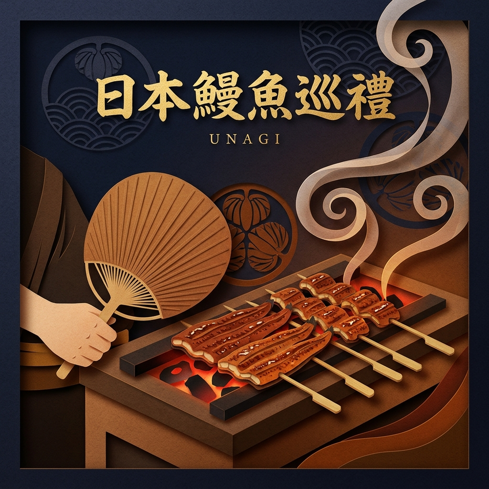
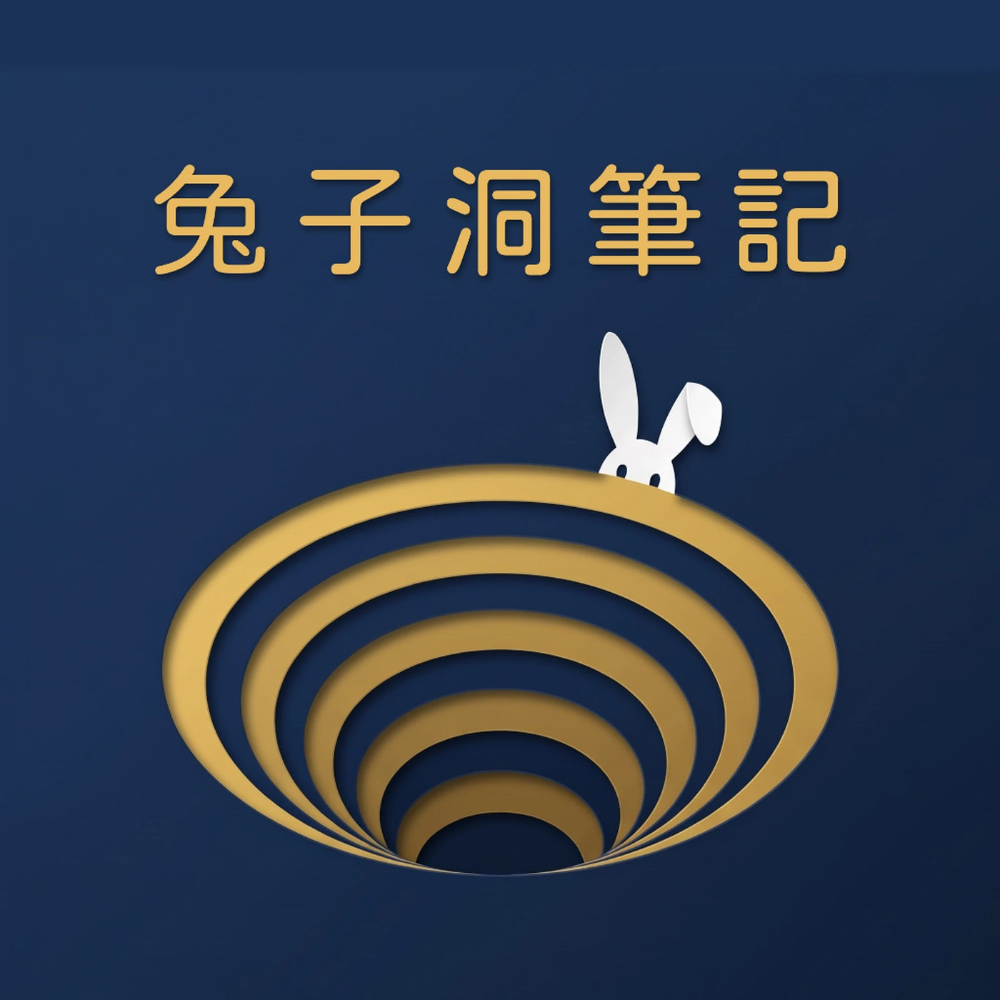

已複製到剪貼簿！
兔子洞筆記
Notes from the Rabbit Hole
📡 總頻道 RSS
🎙️ 訂閱本專題
← 返回所有洞窟系列
📡 訂閱此系列 RSS
🏛️
探索洞窟系列
點擊系列卡片進入專題導覽與單集收聽

第二窟
系列標題
系列簡介說明
集數：
0 集
總長：
0 分鐘
狀態：
已上線
📚 系列資料庫：
📖
各集單集目錄
完整收錄

點擊任一單集開始收聽
兔子洞筆記
00:00
00:00
1.0x
×
訂閱《兔子洞筆記》
複製下方的私人 Podcast RSS 訂閱連結，在任何你常用的播客 App 內貼上即可完成訂閱。
複製連結
如何在 App 中貼上網址？
Apple Podcasts
：打開 App $ ightarrow$ 點擊下方「資料庫」 $ ightarrow$ 點右上角「...」 $ ightarrow$ 選擇「透過 URL 追蹤節目」並貼上。
Pocket Casts / Overcast
：直接在頂部搜尋欄貼上這段網址並按搜尋。
未來更新的所有新集數，都會自動在你的手機背景同步下載！
×
📑 參考資料